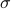
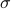

Introduction to Random Dynamical Systems (AERO 630)
Basics of probability theory
– Probability space and random variables
– CDF and PDF, transformation rule, joint, marginal and conditional distributions and densities
– Expectation and its properties, independence, conditional expectation, partition theorem, moments of a random vector: raw and central moments, correlation
– Some inequalities: Cauchy-Schwarz, Holder, Jensen, Markov, Chebyshev
– Moment generating function and characteristic function, Central Limit Theorem
Discrete-time stochastic process
– Random sequences, i.i.d. and i.i.p. process and examples (Bernoulli process and 1D random walk)
– Stationary, strictly stationary and wide-sense stationary (WSS) process
– I/O description of linear system: causality, BIBO stability, DFT and convolution, response of discrete LTI system subject to WSS input, PSD and autocorrelation
– White random sequence, ARMA model
– Conergence of a random sequence: sure, almost sure, in probability, mean-square sense, in distribution; Law of large numbers: WLLN and SLLN
– Markov chain on discrete state-space: transition kernel and probability, stationary distribution, homogeneous and inhomogeneous Markov chains, recurrent and
transient states, positive and null recurrent states, aperiodic state, Perron-Frobenius Theorem and irreducibility condition, ergodicity, Doeblin decomposition,
region-of-attraction (ROA), cell-to-cell mapping
Continuous-time stochastic process
– Review of preliminary concepts: probability space, -algebra, probability measure, Borel -algebra, radom variable and its PDF, stochastic process
-algebra, probability measure, Borel -algebra, radom variable and its PDF, stochastic process
– Dynamics of continous-time random variables, 1D Brownian motion, Ito-SDE, an example: Langevin equation for Duffing oscillator
– Integration of SDEs, Ito version, Stratonovich version, strong and weak solution of SDEs
– Different approaches for weak solution: statistical/equivalent linearization, moment closure, equivalent nonlinear equation, perturbation methods (e.g. WKB
expansion) for low intensity noise, Markov methods
– Markov methods: derivation of Chapman-Kolmogorov equation, Kramer-Moyal expansion, derivation of Fokker-Planck equation (Kolmogorov's forward
equation) and its properties
– Solving Fokker-Planck equation: stationary soluion: linear dynamics and Hamiltonian-like cases, rate-of-convergence to stationary solution, transient solution:
numerical approach and curse-of-dimensionality